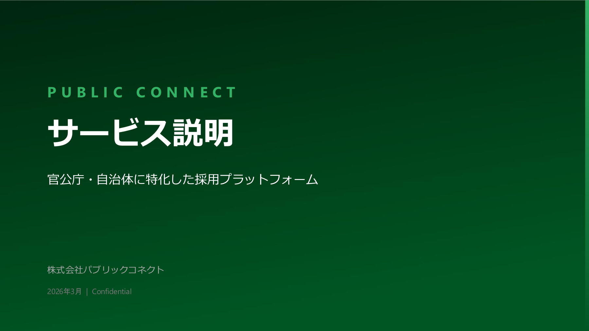
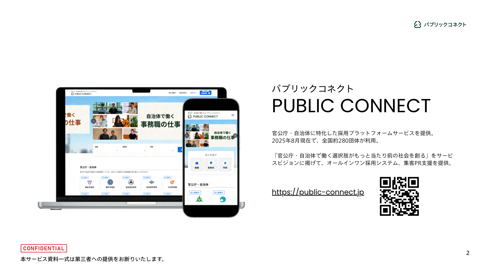
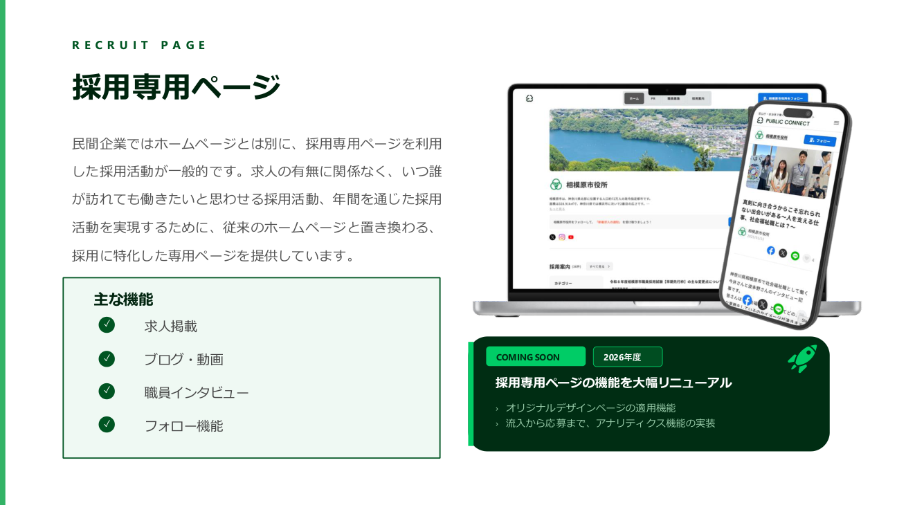
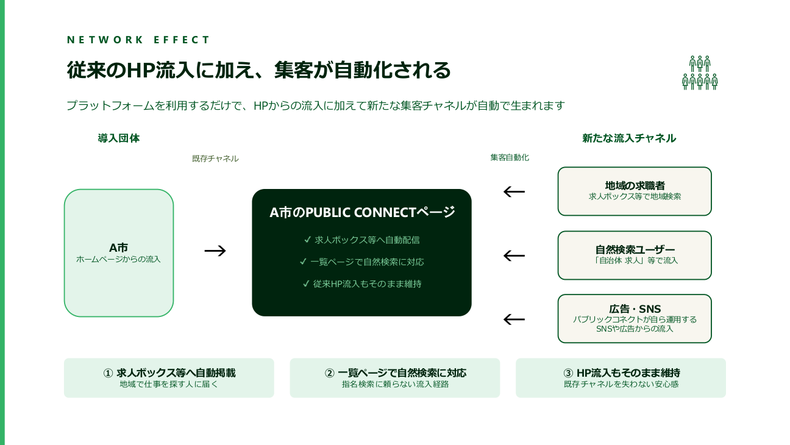
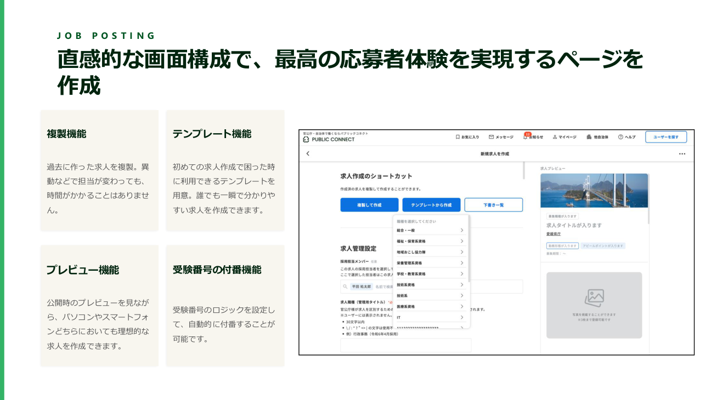
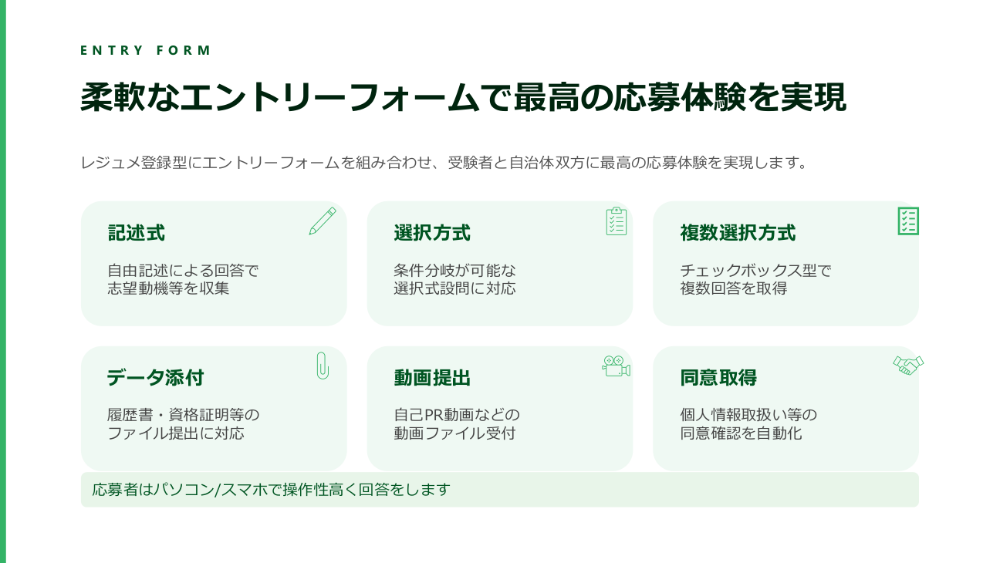

0
導入団体数
Challenge
パブリックコネクトは、資料で示された採用市場の悪化を最重要課題として捉えています。 「応募者減少」「早期離職増」「応募前体験の不足」に対して、採用専用体験を再設計しています。
地方公務員試験 受験者数（10年）
約16万人減少
20代普通退職者（10年）
2.7倍に増加
採用HPの影響
印象が悪いと志望度が下がる
Data Analysis
PDF資料で提示された官公庁採用データを、推移と構成比で可視化しました。 応募母集団の縮小と、採用広報体験の影響が同時に進行していることが分かります。
出典: 総務省「地方公務員の退職状況等調査（各年度）」一般行政職の普通退職者数（在職期間の通算を伴う退職者等を除く）
PDF Insights
ご共有資料のビジュアルをもとに、サービス世界観と会社メッセージをLPに反映しています。


Purpose
私たちは、公共を支える存在に寄り添い、ひらかれた公共を実現します。 「官公庁・自治体で働く選択肢がもっと当たり前の社会」を本気でつくるチームです。
受験者数減少・若手離職増加という構造課題に、プロダクトで挑みます。
応募者視点で「見やすさ」「情報量」「更新性」を徹底した採用体験を提供します。
自治体ごとの採用課題に寄り添い、システムとプロデュースを一体で支援します。
Our Values
枠を超えて思考し、公共の可能性をひらく。発言と行動に責任を持つ。
顧客の課題を自分事として捉え、成功に向けて誠実に向き合い続ける。
手段の完遂ではなく本質成果にこだわり、プロとして品質に責任を持つ。
制約を前向きに捉え、アセットをフル活用して大胆に課題を解く。
Service
スマホ最適化された採用ページで、仕事内容・魅力・応募導線を統合。
エントリーフォーム、メッセージ、ステータス管理を直感的なUIで一元化。
求人検索サイト連携や自然検索対策で、届けるべき人材に情報を届ける。
リクルーティングプロデューサーが戦略設計から実行まで伴走。
ブログ・動画・クリエイティブを活用し、応募動機の解像度を高める。
ISMAP登録クラウド（AWS）基盤、WAFや暗号化通信で安心運用。




Traction
官公庁・自治体向け採用プラットフォームとしてローンチ。
継続利用と実運用を前提に、サービスをさらに強化。
47都道府県で導入。全国規模で採用DXを推進。
Municipalities
導入団体数は360自治体。 都道府県ごとの導入数に応じて濃く表示され、ホバーで自治体一覧を確認できます。
Join Us
採用体験の情報設計、UI設計、プロトタイピング、改善施策の実行。
高品質なインタラクション実装、デザインシステム構築、パフォーマンス改善。
自治体ニーズを起点とした機能企画、優先度設計、価値検証の推進。